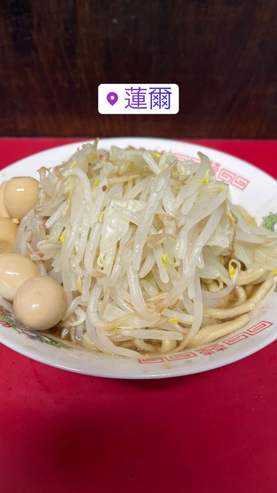
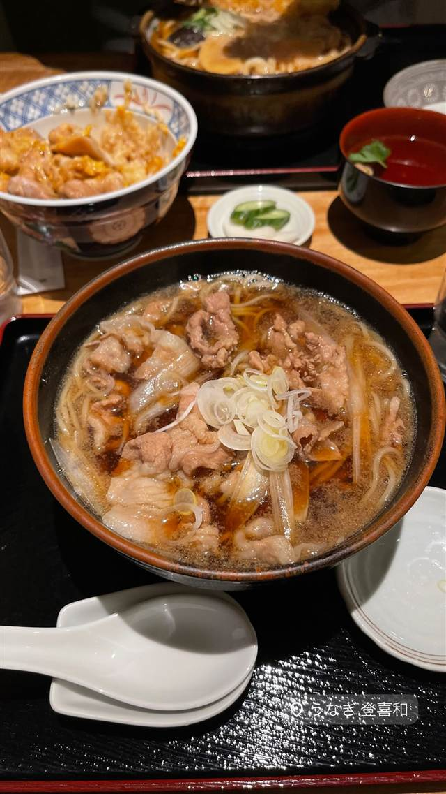
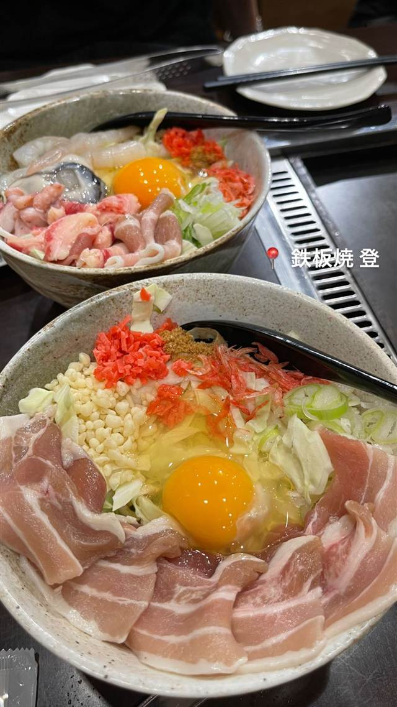
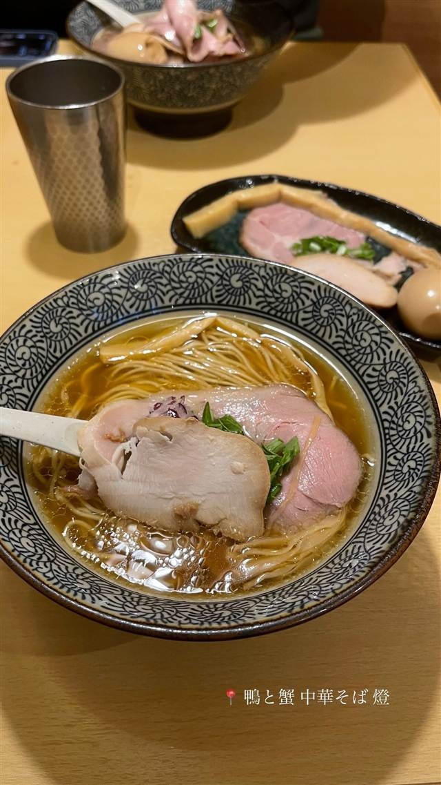
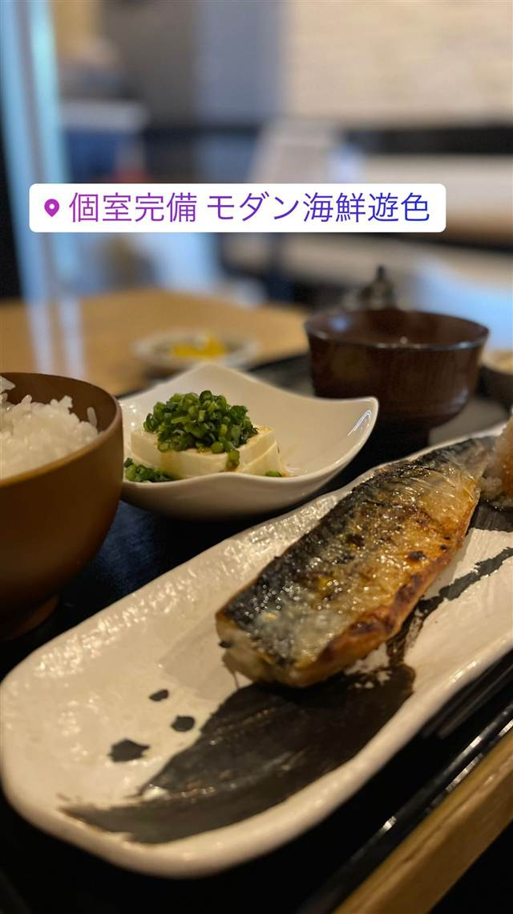
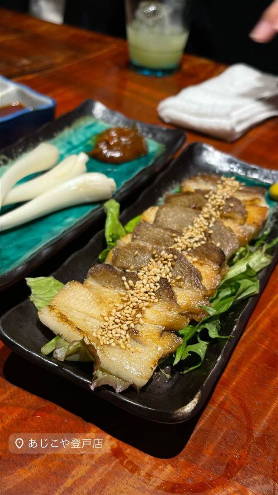
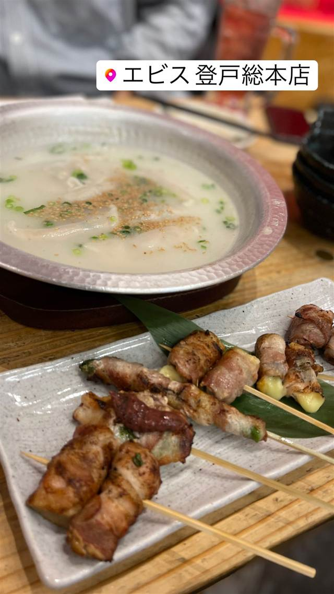
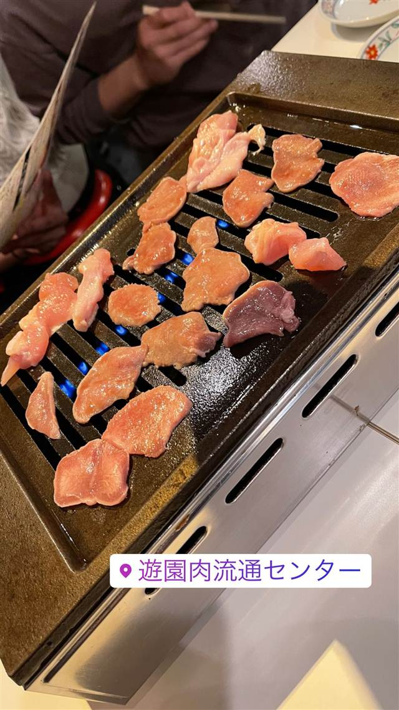

BY TOWN
登戸（神奈川）10店
-

★ 二郎系(インスパイア) 向ヶ丘遊園 蓮爾 登戸店（はすみ） 大盛りはグラム自己申告、二郎町田店の血を引く極太麺 昼 ～¥999 夜 ～¥999 -

うなぎ 登戸駅・向ケ丘遊園駅 登喜和 -

お好み焼き・もんじゃ 登戸駅 鉄板焼 登（トト） 昼 ¥1,000～¥1,999 夜 ¥3,000～¥3,999 -
 コーヒー 登戸駅
FUGLEN COFFEE ROASTERS TOKYO
日本唯一の自家焙煎拠点でオスロ仕込みの浅煎りノルディックローストを行う
昼 ～¥999 夜 ～¥999
コーヒー 登戸駅
FUGLEN COFFEE ROASTERS TOKYO
日本唯一の自家焙煎拠点でオスロ仕込みの浅煎りノルディックローストを行う
昼 ～¥999 夜 ～¥999
-

醤油・中華そば 登戸 鴨と蟹 中華そば 燈 ずわい蟹の旨みを効かせた透明感のある清湯中華そば 昼 ～¥999 夜 ～¥999 -

海鮮丼・定食 向ケ丘遊園駅 モダン海鮮 遊色 十四代や飛露喜など入手困難な日本酒を20種類以上そろえる 昼 ～¥999 -

沖縄料理 登戸 分（わけ）あじこや 登戸店 ラフティーや海ぶどう、てびちなど本場沖縄の家庭料理 夜 ¥3,000～¥3,999 -

焼き鳥 登戸 エビス 登戸総本店 鶏白湯スープで炊く博多風餃子と秘伝の手羽先揚げ 昼 ¥1,000～¥1,999 夜 ¥3,000～¥3,999 -

焼肉 登戸駅・向ヶ丘遊園駅 遊園肉流通センター 19時まで29円のハイボールで飲むタレなしホルモン 夜 ¥2,000～¥2,999 -
 定食屋 登戸駅
らーめんはうす
映画監督・福田雄一も通ったデカ盛りレバニラ炒め
昼 ¥1,000～¥1,999 夜 ¥1,000～¥1,999
定食屋 登戸駅
らーめんはうす
映画監督・福田雄一も通ったデカ盛りレバニラ炒め
昼 ¥1,000～¥1,999 夜 ¥1,000～¥1,999